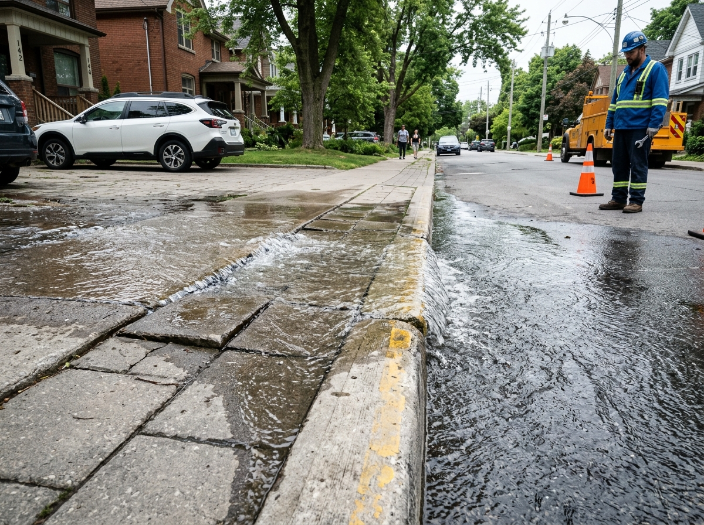

PAM clean drinking water pipeline burst flooding sidewalk in front of Cipete Raya MRT
Clean drinking water is bursting through the sidewalk pavement outside Jl. Fatmawati Raya No. 42 (RT 04 / RW 07, Cilandak Barat) right in front of Cipete Raya MRT. Clean water has been flooding the roadway for 4 hours, causing motorbikes to slip.
Resolution Pipeline
01
Submitted
02
Verified by WargaReport
03
Dispatched to Agency
04
Fixed & Verified
Evidence on File
2 attachments (tap to expand)

pam_water_pipeline_fracture.jpg
Water runoff flooding pedestrian sidewalk slabs and bike lane.
Audio clip · 0:34
acoustic_pipe_pressure_sound.m4a
Acoustic underground hissing recorded near customer meter vault.
Action History
Chronological updates from intake router and field teams
Report submitted via WargaReport intake
Citizen attached visual photo evidence and acoustic audio note.
Verified by WargaReport & dispatched to Perumda PAM JAYA
ReceivedPriority: High. Clean water conservation target. 24h statutory countdown initiated.
Case accepted by Duty Triage Coordinator
Dispatched secondary valve isolation team from Cilandak maintenance station.